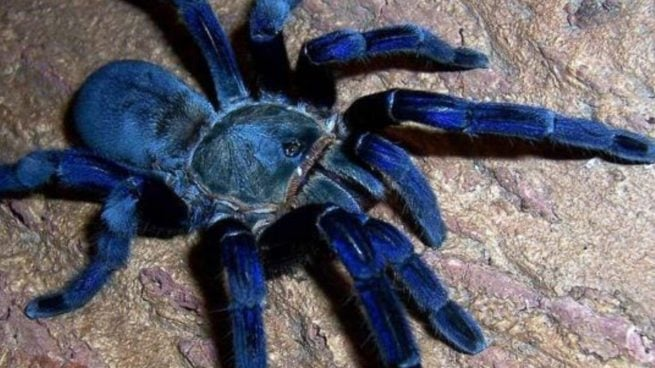

Tarántulas
Las tarántulas son arácnidos de gran tamaño, conocidos por su pelaje distintivo, comportamiento sigiloso y poderosa mordida.
Características principales
Tamaño: Entre 5 cm y 30 cm de envergadura.
Peso: Puede variar entre 30 y 100 gramos.
Poseen pelos urticantes para defensa.
Tienen ocho patas largas y fuertes.
Hábitat: Se encuentran en selvas, desiertos y zonas tropicales.
Alimentación
Las tarántulas son depredadoras que se alimentan de insectos, pequeños anfibios y mamíferos. Inyectan veneno para inmovilizar a sus presas antes de digerirlas.
Especies destacadas
Tarántula gigante amazónica (Theraphosa blondi)
Tarántula cebra costarricense (Aphonopelma seemanni)
Tarántula de rodillas rojas (Brachypelma smithi)
Curiosidades
¿Sabías que algunas tarántulas pueden vivir más de 20 años? Son de los arácnidos más longevos.
⬅ Volver a la sección de insectos y arácnidos